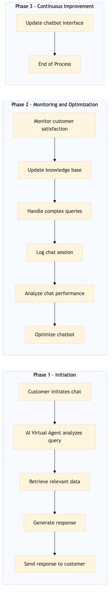

This process document outlines the AI Self-Service Resolution Chatbot Virtual Agent for OTA and TMC systems, focusing on enhancing customer experience through automated resolution of common queries.
| Trigger | Customer initiates a chat with the virtual agent via the Expedia Group or Amex GBT/SAP Concur platforms. |
| Outcome | The virtual agent successfully resolves the customer's query or directs them to the appropriate human support if the issue cannot be resolved automatically, leading to improved customer satisfaction and reduced operational costs. |
| Systems | Expedia Open World Partner Central Amadeus NDC Sabre GDS Travelport EVC One Key TravelAds AWS SageMaker Snowflake Kafka Salesforce Tableau SAP Concur T2 SAP Concur Expense Amex GBT Neo/Complete International SOS Cvent Amex Corporate Card VCN SAP Analytics Cloud Workday |

Click to enlarge
| Step | Name & Pain Point | Role | System | Input | Output | KPI | Flags |
|---|---|---|---|---|---|---|---|
| 1.1 | Customer initiates chat Handling complex queries that require human intervention | Customer | Expedia Open World, Partner Central, Amadeus NDC, Sabre GDS, Travelport, EVC, One Key, TravelAds, AWS SageMaker | Chat initiation via user interface | Virtual agent responds with greeting and prompts for query | Response time within 3 seconds | ⚠ Exception |
| 1.2 | Virtual agent analyzes query Improving natural language understanding for ambiguous queries | AI Virtual Agent | AWS SageMaker, Snowflake, Kafka | Customer's text input | Intent classification and entity extraction | 95% accuracy in intent classification | ◆ Decision |
| 1.3 | Retrieve relevant data Handling large volumes of data efficiently | AI Virtual Agent | Snowflake, Kafka | Extracted entities and intent | Fetched data from relevant databases | Data retrieval time within 1 second | ⚠ Exception |
| 1.4 | Generate response Ensuring the response is clear and helpful | AI Virtual Agent | AWS SageMaker, Tableau | Fetched data and intent | Generated response to customer query | 90% customer satisfaction with response accuracy | ◆ Decision |
| 1.5 | Send response to customer Handling network issues during response delivery | AI Virtual Agent | Expedia Open World, Partner Central, Amadeus NDC, Sabre GDS, Travelport, EVC, One Key, TravelAds | Generated response | Response displayed in chat interface | 98% successful delivery of responses | ⚠ Exception |
| 1.6 | Monitor customer satisfaction Gathering accurate feedback from customers | Customer Support Team | Salesforce, Tableau | Customer feedback on chat resolution | Updated metrics and insights for continuous improvement | 85% positive customer feedback rate | ◆ Decision |
| 1.7 | Update knowledge base Maintaining up-to-date and accurate information | AI Virtual Agent | AWS SageMaker, Snowflake | Customer feedback and chat logs | Updated knowledge base for future queries | 90% accuracy in updating knowledge base | ⚠ Exception |
| 1.8 | Handle complex queries Efficiently identifying and handling complex scenarios | AI Virtual Agent | AWS SageMaker, Snowflake | Complex query detection | Redirect to human support if necessary | 95% successful redirection of complex queries | ◆ Decision |
| 1.9 | Log chat session Ensuring data privacy and security | AI Virtual Agent | Snowflake, Kafka | Chat transcript | Logged chat session for analytics | 100% successful logging of chat sessions | ⚠ Exception |
| 1.10 | Analyze chat performance Extracting meaningful insights from large datasets | Data Analyst | Tableau, Snowflake | Logged chat sessions | Performance metrics and insights | 95% accuracy in performance analysis | ◆ Decision |
| 1.11 | Optimize chatbot Continuously improving the AI model | Data Scientist | AWS SageMaker, Tableau | Performance metrics and insights | Optimized AI model for better accuracy and efficiency | 90% improvement in response accuracy over time | ⚠ Exception |
| 1.12 | Update chatbot interface Designing an intuitive and visually appealing interface | UI/UX Designer | Expedia Open World, Partner Central, Amadeus NDC, Sabre GDS, Travelport, EVC, One Key, TravelAds | User feedback and design improvements | Updated chatbot interface for better user experience | 95% positive user feedback on interface | ◆ Decision |